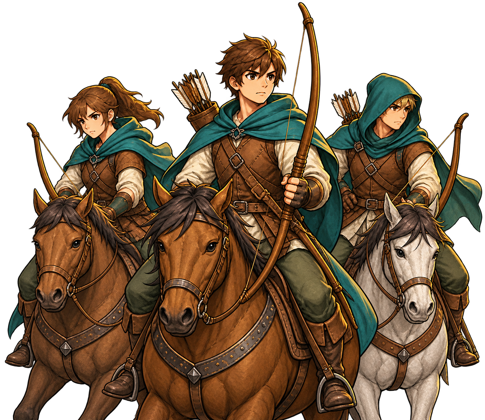
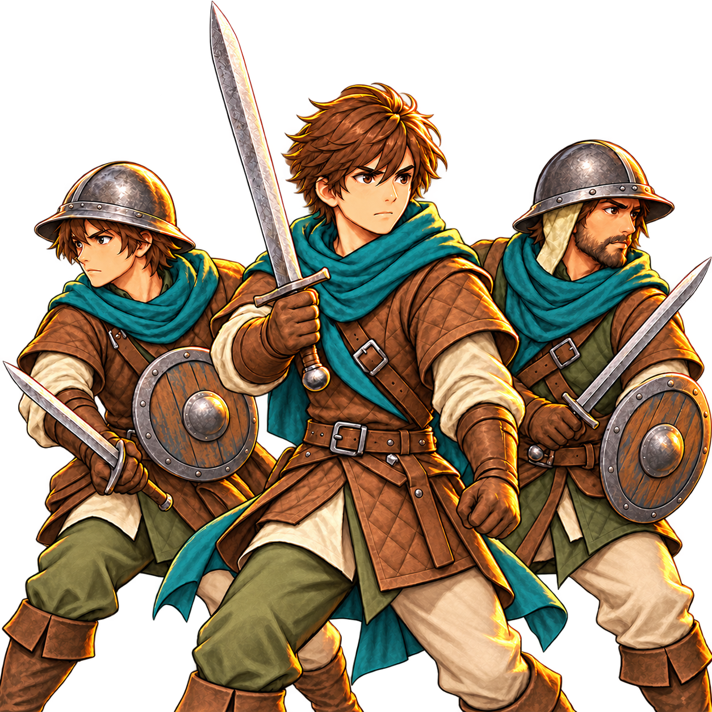
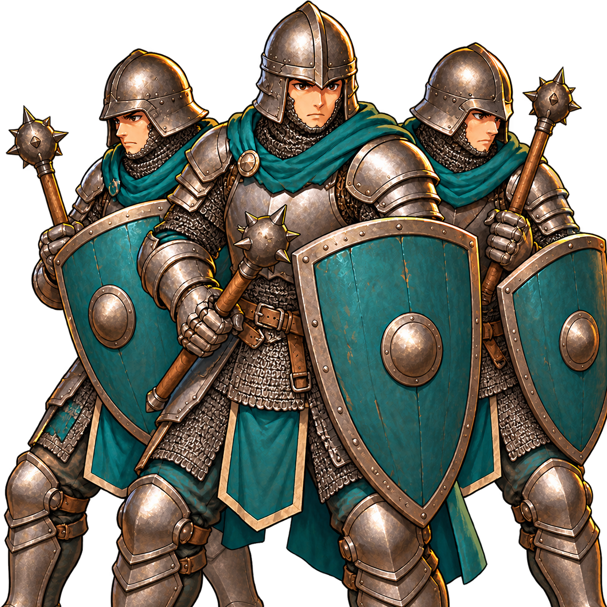
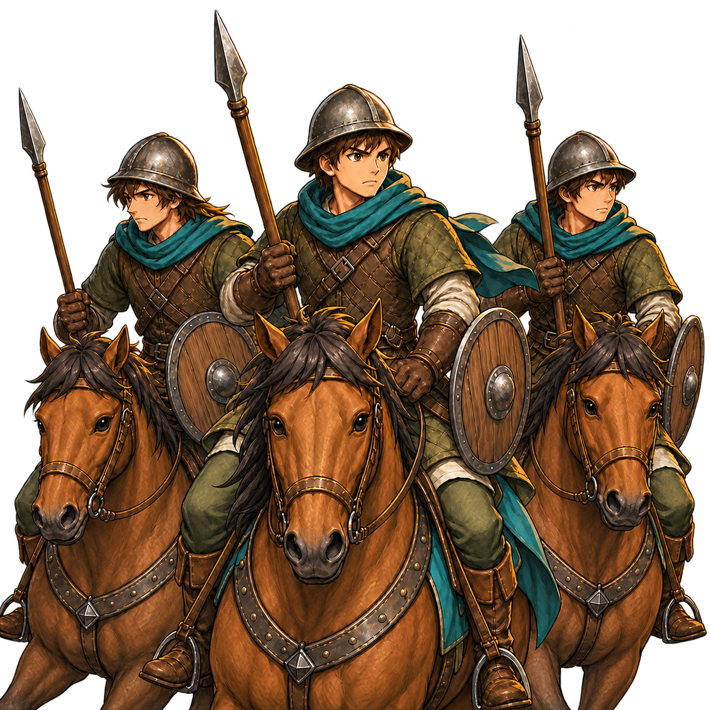

Catalogue
Catalogue des unités
Les valeurs du catalogue décrivent un type d’unité, avant les bonus du héros, du terrain et de la bataille.
L’effectif maximal dépend du grade de la troupe : Soldat 6, Caporal 10, Sergent 14, Adjudant 18, Lieutenant 24. Le coût d’autorité ci-dessous concerne le type ; le coût du grade s’y ajoute. Comprendre recrutement, grades et autorité.
| Unité | Faction | Autorité du type | Attaque | Défense | PV / soldat | Vitesse | Portée |
|---|---|---|---|---|---|---|---|
 | kingdom | 1 | 3 | 2 | 10 | 2 | 1 |
 | kingdom | 2 | 4 | 2 | 8 | 3 | 3 |
 | kingdom | 3 | 4 | 2 | 9 | 5 | 3 |
 | kingdom | 2 | 4 | 4 | 11 | 2.5 | 1 |
 | kingdom | 2 | 5 | 3 | 10 | 3 | 1 |
 | kingdom | 3 | 6 | 8 | 16 | 1.4 | 1 |
 | kingdom | 3 | 5 | 4 | 12 | 6 | 1 |
 | kingdom | 4 | 8 | 8 | 18 | 4.5 | 1 |
| Maraudeurs du Chaos | chaos | 1 | 4 | 2 | 10 | 2.5 | 1 |
La portée et la vitesse aident à comparer les usages, mais les dégâts finaux dépendent aussi du nombre de soldats aptes, du moral, des techniques et du terrain. Les PV sont ceux d’un seul soldat, pas de toute la troupe.
Exemple : composer une troupe
Une troupe de miliciens au grade Soldat peut contenir six soldats. Son coût d’autorité est le coût du type, auquel s’ajoute celui du grade ; ses soldats peuvent être blessés séparément.
L’image montre le type d’unité, pas un effectif garanti de soldats présents ou aptes.